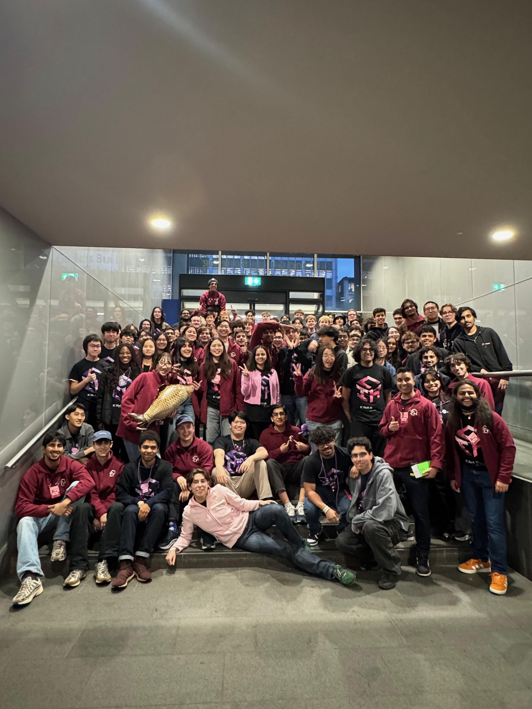

ICHack26 Organiser
- Co-organised a major student-run hackathon attended by 700+ participants, coordinating event logistics and sponsor communications.
- Coordinated 100+ volunteers and collaborated with technical teams on website UI design and event delivery.
